7 สถานที่ท่องเที่ยวที่น่าสนใจภายในจังหวัดประจวบคีรีขันธ์
1.พิพิธภัณฑ์สัตว์น้ำหว้ากอ
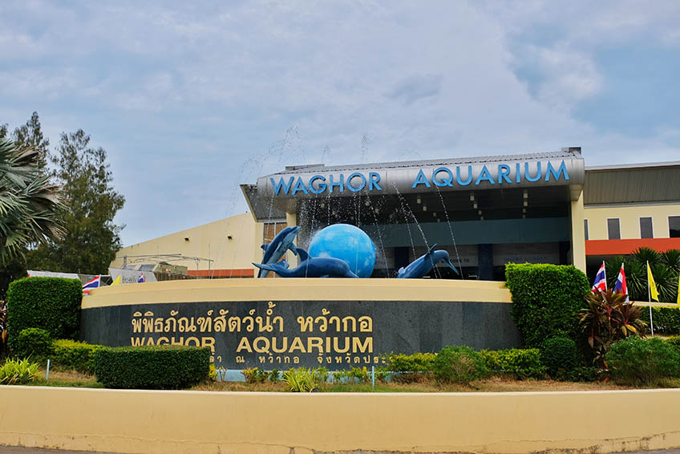
พิธภัณฑ์สัตว์น้ำหว้ากอ เป็นส่วนหนึ่งของอุทยานวิทยาศาสตร์พระจอมเกล้า โดยภายในจะมีพื้นที่จัดแสดงทั้งหมด
3,600 ตารางเมตร
ภายในอาคารจะจัดแสดงนิทรรศการและจัดแสดงพันธุ์สัตว์น้ำที่หลากหลายตามระบบนิเวศของแหล่งน้ำ ทั้งแหล่งน้ำจืด
แหล่งน้ำกร่อย และทะเล
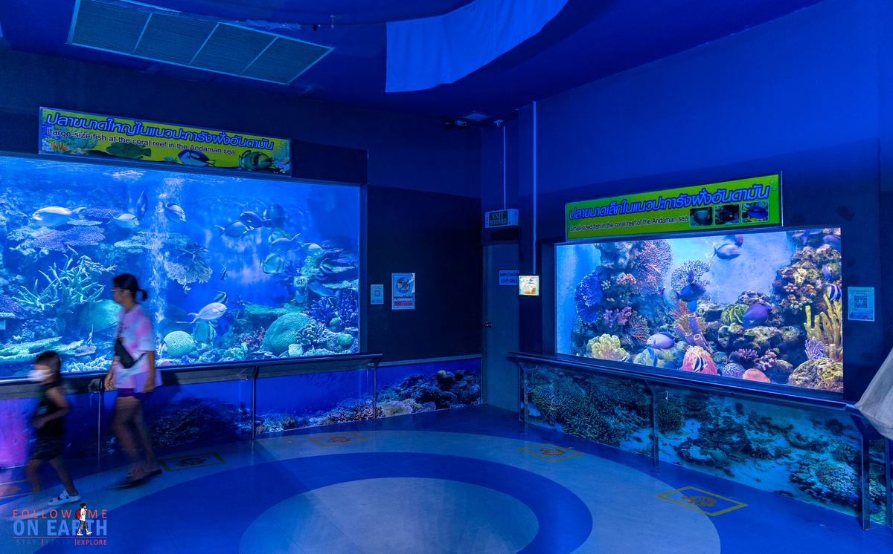
ภายในจะแบ่งเป็นพื้นที่เป็น 6 โซน ด้วยกันค่ะ คือ โซนอัศจรรย์โลกสีคราม โซนจากขุนเขาสู่สายน้ำ
โซนสีสันแห่งท้องทะเล โซนเปิดโลกใต้ทะเล โซนพิพิธภัณฑ์สัตว์น้ำ และ โซนกิจกรรมปฏิบัติการ
ที่นี่สร้างขึ้นมาก็เพื่อเป็นศูนย์กลางการเรียนรู้ด้านวิทยาศาสตร์ทางทะเล
ธรรมชาติวิทยา และสิ่งแวดล้อม สำหรับเด็กและเยาวชน มีสื่อบรรยายต่างๆ
เพื่อให้ความรู้ควบคู่ไปกับการท่องเที่ยวเชิงอนุรักษ์
ข้อมูล พิพิธภัณฑ์สัตว์น้ำหว้ากอ
2.เขาล้อมหมวก
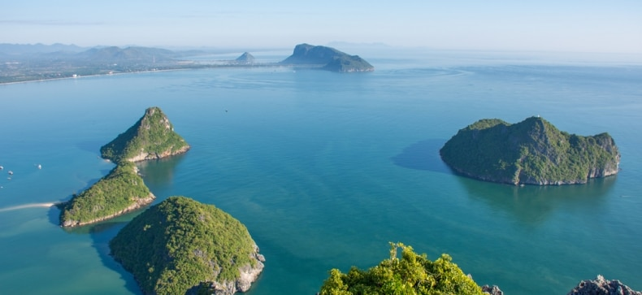
เขาล้อมหมวก จุดชมวิวที่สามารถเห็นวิว อ่าวน้อย อ่าวประจวบ และ อ่าวมะนาว รวมถึงตัวเมืองประจวบ แบบ 360
องศา ตั้งอยู่ภายในเขตกองบิน 5 หรือ กองบิน 53 ติดกับอ่าวมะนาว จังหวัดประจวบคีรีขันธ์ ซึ่งบนนี้ประดิษฐาน
พระพุทธบาทจำลอง และ พระบรมสารีริกธาตุ สำหรับใครที่ตั้งใจจะขึ้นเขาล้อมหมวก แนะนำให้ฟิตร่างกายดีๆ
และติดต่อกับหน่วยงานที่ดูแลก่อน เพราะที่นี่จะไม่เปิดให้ขึ้นชมตลอดทั้งปี
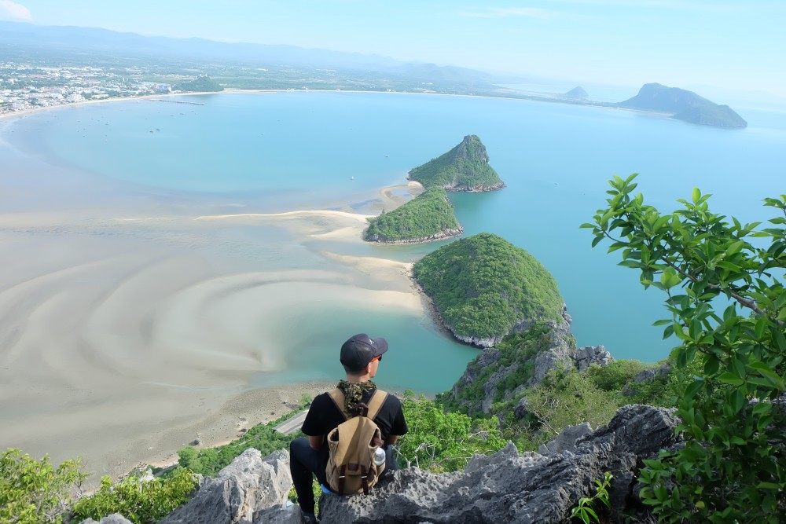
กิจกรรมผจญภัยนี้ เป็นการเดินขึ้นบันได 496 ขั้น ระหว่างทางจะพบกับฝูงค่างแว่นถิ่นใต้เป็นระยะ
จากนั้นไต่เชือกช่วงกลางเขาขึ้นไปถึงยอดเขา
ด้วยระดับความชัน 45-90 องศา ใช้เวลาประมาณ 2 ชั่วโมง ไม่อนุญาตให้บินโดรนและถ่ายรูปติดสนามบิน
ควรพกกระบอกน้ำขึ้นไปด้วยเพื่อจิบน้ำระหว่างทาง เมื่อพิชิตเขาล้อมหมวกได้แล้วกลับลงมา
สามารถแจ้งขอรับใบประกาศนียบัตรที่ระลึกที่จุดลงทะเบียนได้
มีค่าธรรมเนียม 40 บาท
ข้อมูล เข้าล้อมหมวก
3.วัดทางสาย
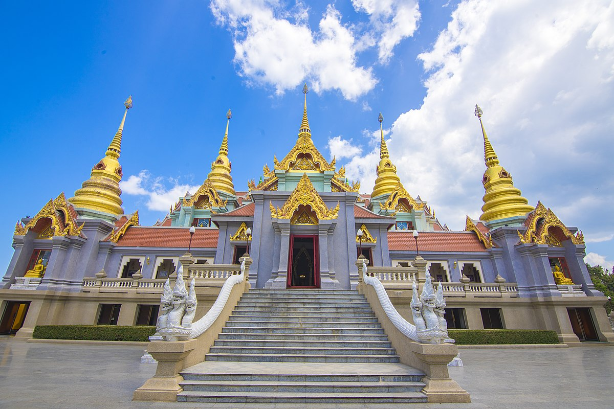
วัดทางสาย เป็นวัดสวยริมทะเล ตั้งอยู่ อำเภอบ้านกรูด จังหวัดประจวบคีรีขันธ์
เป็นวัดแห่งหนึ่งที่มีสถาปัตยกรรมที่สวยงาม และบ่งบอกถึงศิลปะไทยได้เป็นอย่างดี ที่นี่มีพระพุทธกิติสิริชัย
หรือ ที่เรียกกันโดยทั่วไปว่า หลวงพ่อใหญ่ หันหน้าออกไปทางด้านทะเล และมี พระมหาเจดีย์เก้ายอด หรือ
พระมหาธาตุเจดีย์ภักดีประกาศ เป็นพระปรางค์ จัตุรมุขสูงสามชั้น สร้างขึ้นโดยกลุ่มของชาวบ้าน
เพื่อเฉลิมฉลองในวโรกาส ครองราชย์ครบรอบ 50 ปี ในหลวงรัชกาลที่ 9
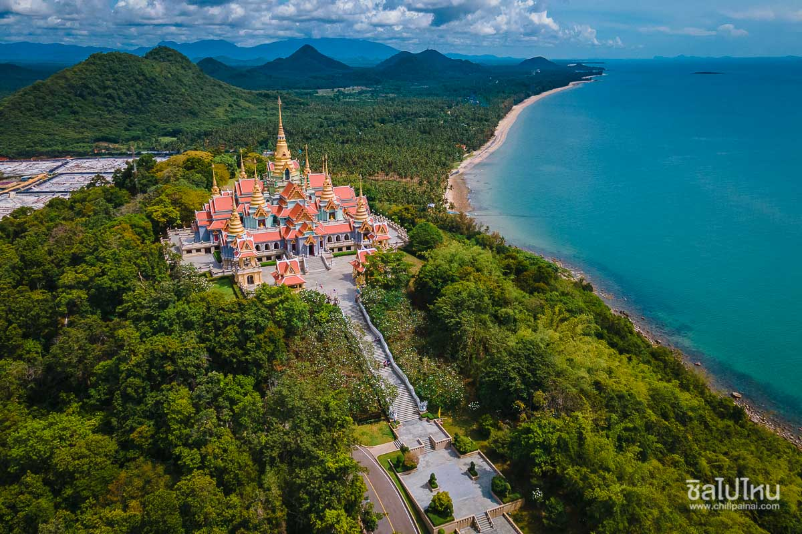
ข้อมูล วัดทางสาย
4.ชายหาดหัวหิน
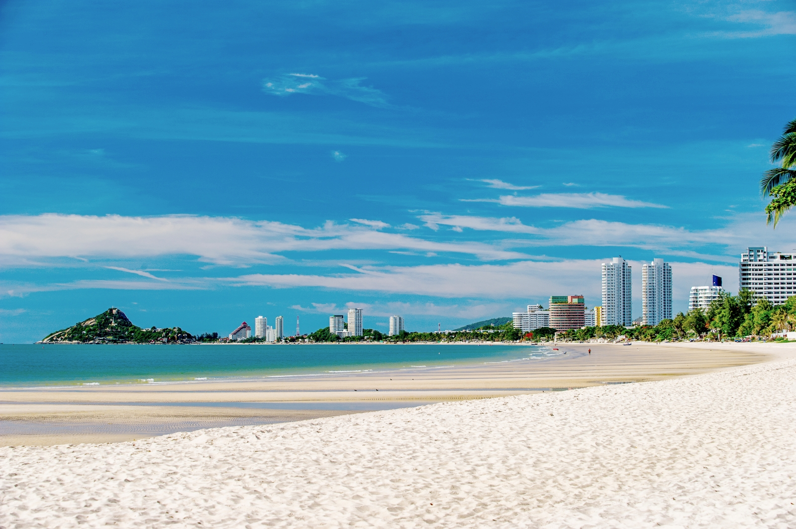
สถานที่ยอดนิยมตลอดกาลของหัวหิน ซึ่งตั้งอยู่ทางด้านทิศตะวันออกของตัวเมือง
มีทางลงหาดอยู่ที่ถนนดำเนินเกษม ระหว่างสองข้างทางลงหาดมีโรงแรม และร้านจำหน่ายสินค้าที่ระลึก
หาดหัวหินมีความยาวประมาณ 5 กิโลเมตร ทรายขาวละเอียด เหมาะสำหรับเล่นน้ำทะเล
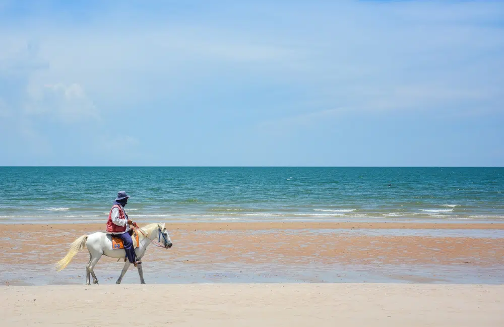
อีกทั้งที่นี่ยังเป็นจุดศูนย์รวมของกิจกรรมทางน้ำต่างๆ ไม่ว่าจะเป็น บานาน่าโบ๊ต เจ็ทสกี
รวมไปถึงขี่ม้าชมชายหาดชิลๆ ด้วยเช่นกัน
ข้อมูล ชายหาดหัวหิน
5.อุทยานแห่งชาติหาดวนกร
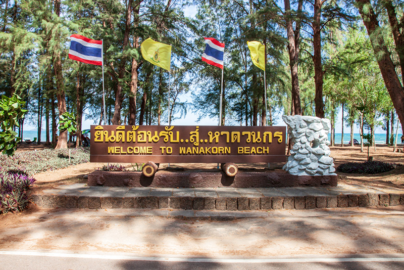
หาดวนกร เป็นส่วนหนึ่งของ อุทยานแห่งชาติหาดวนกร ที่ขึ้นชื่อในเรื่องของ ป่าสนริมทะเล
ที่ร่มรื่นและสวยงามเป็นอย่างมาก เหมาะกับการมาท่องเที่ยวตั้งแต่เดือนธันวาคมไปจนถึงเดือนเมษายน
เพราะอากาศค่อนข้างดี และเหมาะกับการมาเล่นน้ำทะเล และนั่งเรือไปดำน้ำตามเกาะต่างๆ อย่าง เกาะจาน และ
เกาะท้ายทรีย์ อีกทั้งยังมีกิจกรรมอื่นๆ เช่น ดูนก ตกปลา และตั้งแคมป์กางเต็นท์ในป่าสน
ได้สัมผัสธรรมชาติแบบใกล้ชิด
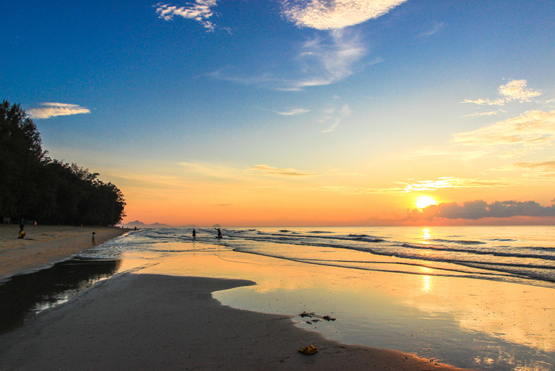
ข้อมูล อุทยานแห่งชาติหาดวนกร
6.ศูนย์ศึกษาเรียนรู้ระบบนิเวศ ป่าชายเลนสิรินาถราชินี
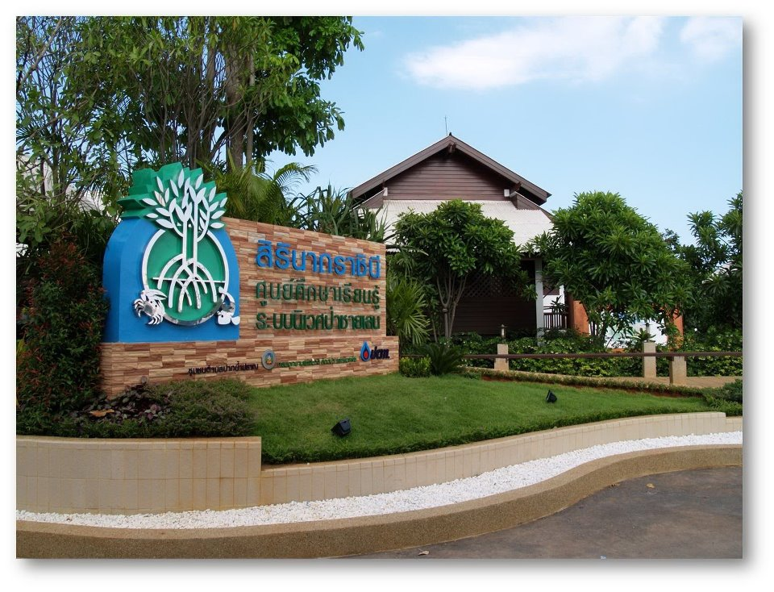
ศูนย์ศึกษาเรียนรู้ระบบนิเวศป่าชายเลนสิรินาถราชินี
เป็นศูนย์การเรียนรู้ทางด้านการฟื้นฟูป่าชายเลนนากุ้งร้างแห่งแรกในประเทศไทย ตอนนี้ได้กลายเป็น
เส้นทางเดินศึกษาธรรมชาติ ท่ามกลางป่าชายเลนที่สวยงาม
โดยตั้งอยู่ในเขตป่าสงวนแห่งชาติป่าคลองเก่า-คลองคอย ปราณบุรี
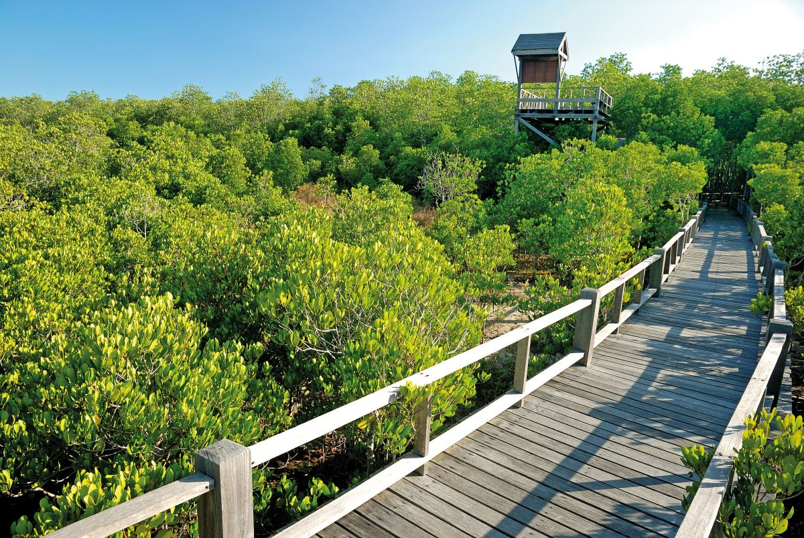
ภายใน ศูนย์ศึกษาเรียนรู้ระบบนิเวศป่าชายเลนสิรินาถราชินี แบ่งออกเป็น พื้นที่อาคารเฉลิมพระเกียรติ
และส่วนบริการนักท่องเที่ยว พื้นที่เส้นทางเดินศึกษาธรรมชาติ และ พื้นที่ศึกษาเรียนรู้ บรรยากาศภายในร่มรื่น
สามารถเดินเที่ยวชมได้ด้วยตัวเองเลย
ข้อมูล ป่าชายเลนสิรินาถราชินี
7.ถ้ำพระยานคร
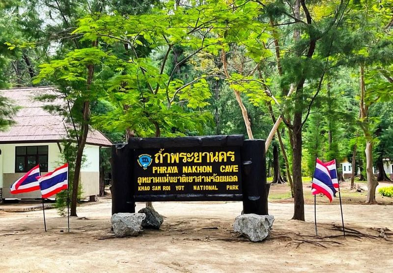
อีกหนึ่งสถานที่งดงาม ควรค่าแก่การไปเยี่ยมชมสักครั้งในชีวิตคือ ถ้ำพระยานคร ที่เที่ยวประจวบคีรีขันธ์
ที่ต้องห้ามพลาด ด้านในเป็นถ้ำขนาดใหญ่ที่มีหินงอกหินย้อย บนเพดานถ้ำมีช่องให้แสงสว่างลอดเข้ามา สาดส่องที่
พระที่นั่งคูหาคฤหาสน์ พลับพลาแบบจตุรมุข สร้างในสมัยรัชกาลที่ 5 พอดิบพอดี มีความงดงามตระการตาเป็นอย่างมาก
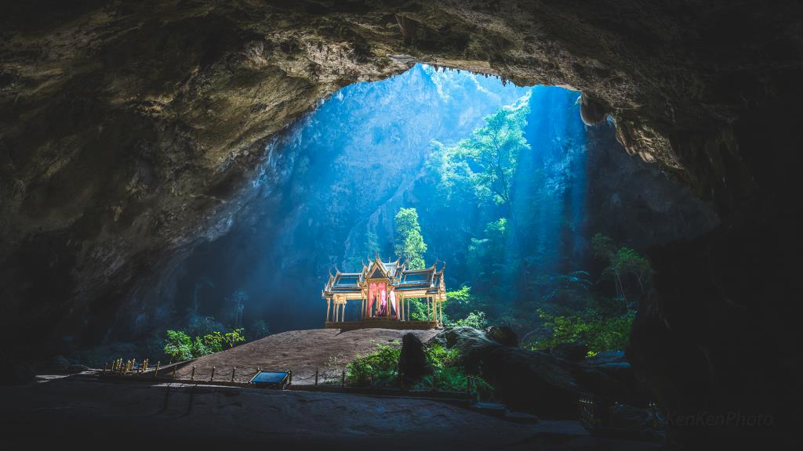
ข้อมูล ถ้ำพระยานคร